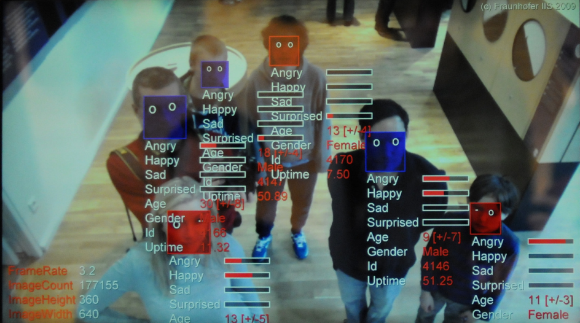

Assignments
In het derde hoorcollege ging het over wearables, technologie om aan je lichaam te dragen. Denk aan een smartwatch of FitBit. De bijbehorende opdracht is als volgt: Bedenk een concept gebaseerd op een van deze twee cases. Case 1. Social interaction. Can you think of a new interactive wearable concept that has not been mentioned in the lecture, based on the biometric body data of people who are in the same room as you? Case 2. Touch as a new way of communicating. Can you think of a new interactive wearable concept that has not been mentioned in the lecture that stimulates interaction based on touch signals between people?
Case 1: biometric data wearable.
Mijn concept is een draagbare hoofdband voor blinde of slechtziende mensen. In de hoofdband zit een cameraatje verstopt. De camera is uitgerust met gezichtsherkenning. Ook heeft de hoofdband toegang tot een persoonlijke database met foto’s van bekenden. De slechtziende gebruiker heeft de hoofdband om en krijgt een seintje in de vorm van een lichte trilling als er een persoon is gedetecteerd dat voorkomt in de database van gezichten. Via een oortje zou er ook nog gecommuniceerd kunnen worden welk persoon is gedetecteerd. Aangezien de gebruiker niet of nauwelijks kan zien, zal diegene hoogstwaarschijnlijk niet zelf een fotogalerij hebben in zijn of haar telefoon met bruikbare foto’s voor de database. De database zal dus eerst opgebouwd moeten worden met behulp van iemand met goed werkende ogen. Of de gebruiker kan bij nieuwe ontmoetingen vragen of de persoon in de camera van de hoofdband wilt kijken zodat er een foto gemaakt kan worden die automatisch in de database terechtkomt. Doordat de camera gezichten meet van mensen, zouden ook de emoties gemeten kunnen worden. Zo worden de gezichtsuitdrukkingen van mensen doorgegeven aan de drager van de hoofdband. De hoofdband zou ook nog gebruik kunnen maken van stemherkenning. Zodra de geluidssensor een stem oppikt die in de database is opgeslagen, krijgt de gebruiker een seintje in de vorm van een trilling. Nu is dit voor slechtzienden waarschijnlijk niet vaak nodig omdat zei door de afwezigheid van zicht beter stemmen kunnen herkennen. Maar het zou soms van pas kunnen komen. De sensoren die gebruikt worden zijn dus camera, trilling, druk (druk op een knopje om de foto te maken) en geluid.

Research
Ik heb zelf ook nog wat onderzoek gedaan naar interessante wearables. Eentje die mij erg aansprak is Lys, een draagbare lichtsensor. Met een klipje maak je de wearable vast aan je kleding. Het apparaat laat precies weten hoeveel van welk licht je nodig hebt. Hij let er bijvoorbeeld op of je voor het slapen een bepaalde tijd geen blauw licht meer tot je neemt en of je genoeg daglicht ziet. Dit kan helpen bij onder anderen slaapproblemen en depressies. Lys Technologies
Reflect
Zelf bezit ik nog geen wearables, maar ik merk wel in mijn omgeving dat ze in opkomst zijn. Veel mensen hebben tegenwoordig een smartwatch of FitBit. Ik vind het vooral leuk dat wearables vroeger in films werden gezien als iets enorm futuristisch en dat nu als die toekomstdromen langzaam werkelijkheid worden. Het bijzondere aan wearables vind ik dat de gebruiker meer bewust wordt van zijn of haar eigen gedrag en dat gedrag meestal gaat verbeteren. Bijvoorbeeld het doen van meer stappen per dag of meer naar buiten gaan. Ik denk dat dat wearables in de toekomst veel kunnen betekenen voor de mens. Kijk nu bijvoorbeeld al naar de pacemaker, een wearable die mensen in leven houdt.